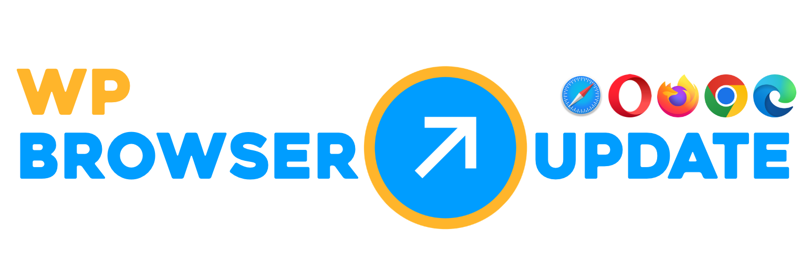

A clear update prompt
The notice explains that the browser is outdated and points people to a current browser download.

WordPress Plugin
WP BrowserUpdate adds a clear browser update notice to WordPress. You set the browser limits, the text and the links; the plugin keeps the visitor-facing files on your own site.
A short, direct notice appears only when a visitor uses a browser below your configured threshold.
The notice explains that the browser is outdated and points people to a current browser download.
Modern browsers stay out of the flow. Older browsers get the nudge you chose.
The public page loads the packaged runtime from your WordPress installation.
Many sites use CSPs, privacy tools or tracker blocking. WP BrowserUpdate avoids a common failure point by serving the notification assets from the same site as the page.
Keep the default setup simple, or tune the details when your audience needs stricter browser guidance.
Set defaults, major versions, negative offsets or exact dotted versions such as 137.0.3912.63.
Treat modern Edge separately from legacy Internet Explorer.
Force the notice while setting up, then turn test mode off for real traffic.
Add site-specific CSS without printing raw style blocks into the page.
Adjust the wording and browser download targets for your visitors.
Use a focused WordPress settings page, not a separate dashboard.
Choose how soon the notice can reappear after a visitor has seen it.
Decide how the notice handles mobile, insecure or unsupported browsers.
Use WordPress.org for normal installation and updates. Use GitHub for release notes, source review and issue tracking.
Requires WordPress 6.0 or newer and PHP 7.4 or newer. The browser notice runtime is packaged with the plugin and documented in the assets.